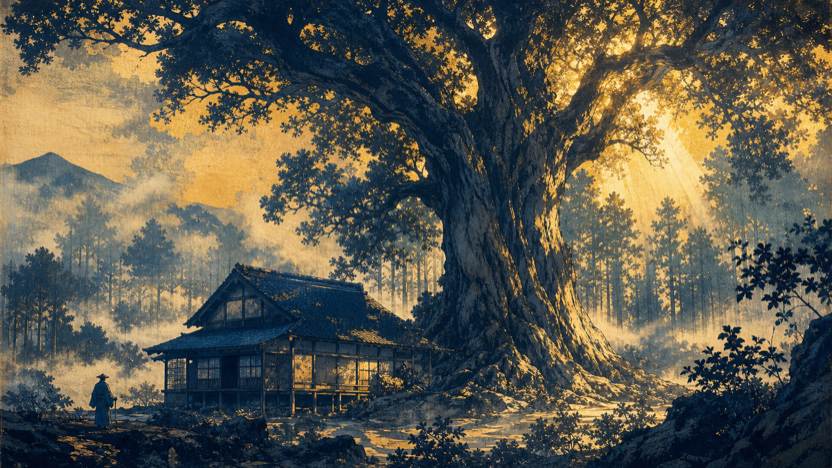

RunPodでRTX 3090を借り、ComfyUI + Wan2.2 14B（4-step LoRA）を自前で立てて、ep31の浮世絵を実際にi2v動画化。前提＝全シーンを動かす。falの代替を自作できるか、コストと品質を実物で確かめた。
🎯 結論：両方とも「YES」。
① 品質：木版画の質感を一切崩さず動いた（写実化ドリフトゼロ・人物シルエットは静止・雲/光/水だけ動く）。これはDomoAIが27カット中21カット写実化して解けなかった問題の解決。
② コスト：1カット約157秒（3090・$0.22/hr）。全シーン毎日（≒850カット/月）でもGPU代は月 約¥1,300–3,000。当初見積り¥4,000–6,000よりむしろ安い（Podを使う時だけ起動する前提）。
③ 今回の検証で実際に使ったお金：約¥130（失敗Pod・モデルDL・本番テスト全部込み）。
ep31「となりのトトロ × 需」の素材から2枚。左=入力した静止画／右=Wan2.2が生成した5秒動画。スタイルが崩れていないか、変な動き（写実化・人物の崩れ）が無いかを見てほしい。
動き＝雲が流れ、月明かりと水面がゆらめく。人物のシルエットは動かない。0フレーム目は入力と完全一致（構図保持の指標 drift=2／40超で「別物に再構築」）。

こちらは動きが分かりやすい：枝越しの光芒（god ray）と霧がゆっくり流れる。藍と金の木版調・和紙質感は完全に保持。
| 手段 | 動き | 木版画の保持 | 制御（人物固定など） | コスト |
|---|---|---|---|---|
| DepthFlow（現行・$0） | 偽パララックス（実際は動かない） | ◎崩れない | — | $0 |
| DomoAI 標準（無料無制限） | 動く | ✗ 21/27カット写実化 | ✗ 負プロンプト/マスク無し | $0 |
| fal Kling/Seedance（従量） | ◎動く | ○ | ◎マスク等あり | 月$300超で論外 |
| クラウド自作 Wan2.2＋4step | ○ 環境モーション | ◎崩れない（実証） | ○ 弱CFG＋反写実ネガ＋画風アンカーが効く | 月¥1,300–3,000 |
DomoAI標準には負プロンプト欄もマスクもCFGも無いので、いくら「no realistic」と書いても写実化が止まらなかった。今回の自作ComfyUIは negative_prompt（写実語を殺す）＋ 画風アンカー（木版と明記）＋ 低CFG ＋ 4-step LoRA（再想像を抑える） の制御端子を全部握れる。だから木版画のまま動く。
| 項目 | 実測値 |
|---|---|
| GPU | RTX 3090 24GB（RunPod SECURE） $0.22/hr |
| 1カット生成（832×480・5秒・4step・ウォーム） | 157秒 |
| 初回のみコールド（モデル読込） | 281秒（1回だけ） |
| 1話28カット | 約75分 ≒ 1.26 GPU時 ≒ $0.28（¥43） |
| 全シーン毎日（≒850カット/月） | 約37 GPU時 × $0.22 ≒ $8 ≒ ¥1,300/月 |
| 余裕を見て（再生成・起動オーバーヘッド・保存） | 実運用 ¥2,000–3,000/月 |
最重要の前提：この安さは「生成する時だけPodを起動し、終わったら止める」運用が条件。Podを24時間つけっぱなしにすると $0.22×24×30 ≒ $158/月（¥24,000）になる。→ 自走バッチ（起動→全カット生成→停止）を組むのが必須。今日の検証ハーネスはまさにそれ（起動・DL・生成・停止を自動化済み）。
今日立てた基盤をスクリプト化（起動→全カットi2v→1080pアップスケール→停止→0フレーム照合）。ep31一本を実際に全カット動かして、通しで品質と実コストを確定する。月¥2–3千で「全シーン毎日動く本編」が現実になるかを1本で見極める。
720p直接生成・動き量を上げた版・アップスケール画質を数カットで比較してから全体へ。品質の上限を見てから本番化したい場合。
「実際に動いてほしい見せ場」だけクラウドWan2.2、その他はDepthFlow($0)据え置き。月¥数百レベル。ただし「全シーン動かす」当初要望からは後退。